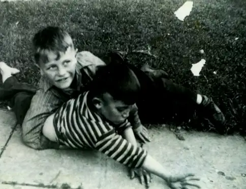

Last week on Peace Garden Mama, I came out of my month-long blogging hiatus with a post about my father, and how we celebrated his Aug. 4 birthday in his hometown of New Rockford, N.D. But there was more to tell than I had time, so I’m breaking my “fast” here with Part II.
It feels fitting to celebrate dad on a blog called Peace Garden Writer. If I’m Peace Garden Writer, Dad was the original. He, too, had roots that were groomed and grown first in this prairie land. And though we both left for a time to explore the world a bit, so, too, did we both return to the prairie, which tends to be a beckoning force to many.
So where does a writer begin? Where’s the starting point for one who goes on to fashion words as habit?
For Dad, it began in a neighborhood in a small North Dakota town that breathed railroad.
{kind=link}
In a house that looked like out of a story.
{kind=link}
{kind=link}
It started with two wild and restless little brothers…
 |
| Leo, left, and Bobby Beauclair, circa 1939 |
{kind=link}
Looking up to two wild and restless older brothers…
{kind=link}
{kind=link}
A father with work to do, and 11 mouths to feed, including his own…
{kind=link}
And the women who loved them…
{kind=link}
And softened them up when necessary.
{kind=link}
And all that led up to the makings of this dreamer, who wanted to appease his lovely mama and become a priest.
{kind=link}
But his dreaming ways got the best of him, and after a time he left the seminary — not long after receiving a telegram that his beloved mama had passed on. Only 19 then, it wasn’t long before he set his sights in a new direction — to the services, which led him to Japan.
And after that, a job that had him crossing paths with a gal named Jane…
{kind=link}
…who softened him some more and bore his children, two daughters…

Girls who would one day become singers, writers, teachers, wives, aunts, mothers.
And who would, each in her own way, bring whatever was left undone by their father back into the world, to finish the story.
{kind=link}
It is here where we end. It is here where we begin.